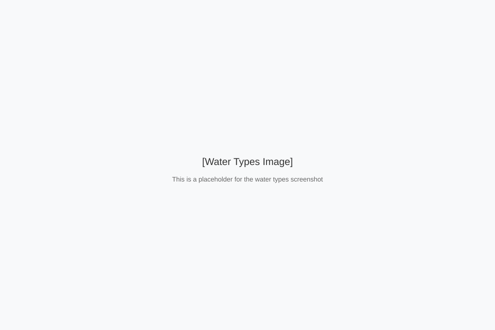
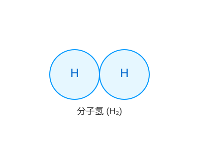
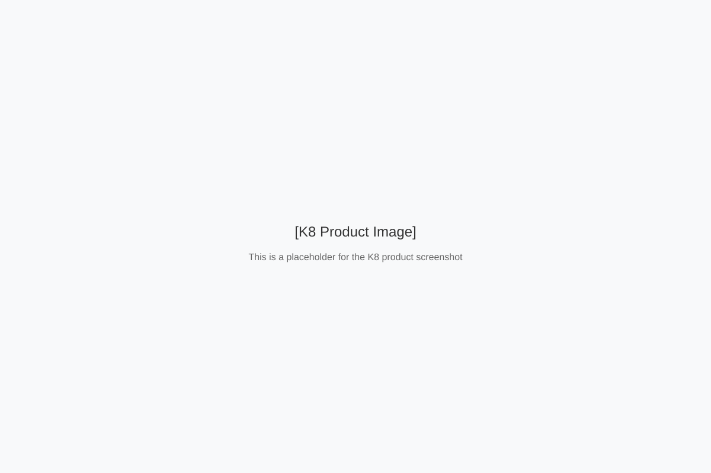

Discover the World of Kangen Water
What is Kangen Water?
Kangen Water is alkaline ionized water produced by Enagic's water ionization machines. It has three main properties:
Alkaline
pH 8.5-9.5, helps balance body acidity
Antioxidant
Negative ORP, neutralizes free radicals
Micro-clustered
Smaller water clusters for better absorption

Multi-Function Water
Enagic machines produce various types of water for drinking, cooking, cleaning, and beauty.

Learn MoreThe Science
Understand the mechanism of molecular hydrogen as an antioxidant and its benefits.

Explore ScienceMachines
Discover Enagic's high-quality water ionizers, including the flagship K8.

View Machines